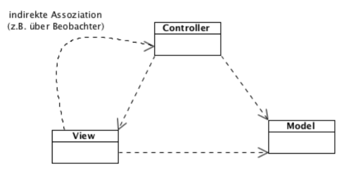
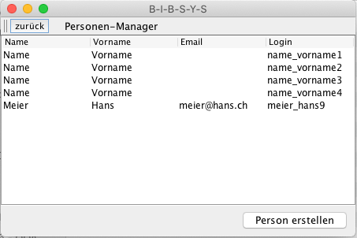
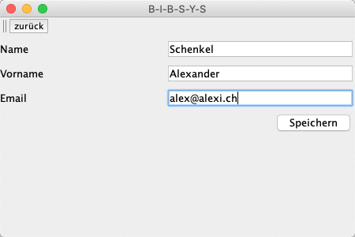

{% extends "../_base_template.html" %}
{% block title %}Lektion 11 - Design Pattern - MVC{% endblock %}

{% block sections %}
<section data-markdown>
<textarea data-template>
<i class="fas fa-flask"></i> Besprechung Hausaufgaben: Umsetzen Assoziationen
=============================

* Besprechen / Zeigen der Kompositions-Aufgabe

</textarea>
</section>

<section data-markdown>
<textarea data-template>
<i class="fas fa-graduation-cap"></i> Design Pattern
=============================

Heutiges Ziel
-------------

* Sie wissen, was man unter "Design Pattern" versteht
* Sie kennen das MVC-Design Pattern
* Sie können das MVC-Design-Pattern im Code anwenden

### Hausaufgaben

* Implementieren der Maske "Person erstellen" unter Einsatz des MVC-Design-Pattern

</textarea>
</section>

<section>
<section data-markdown>
<textarea data-template>
<i class="fas fa-graduation-cap"></i> Was sind Design Pattern?
=============================

* Design Patterns lösen bekannte, wiederkehrende Entwurfsprobleme.
* Sie fassen Design- und Architekturwissen in kompakter und wiederverwertbarer Form zusammen.
* Design Pattern sind nur **„Denkmuster“**, keine konkrete Software (im Gegensatz zu Frameworks und Libraries)

* Sie kommen selten allein :-) <br />
  Beispiel: das MVC-Pattern wird vielmals unter Zuhilfenahme des Observer/Observable-Pattern umgesetzt.

* Sie orientieren sich an den wichtigen **Software-Entwurfsprinzipien**:
    * <!-- .element class="fragment" --> DRY - Don't Repeat Yourself!
    * <!-- .element class="fragment" --> Single Responsibility, Separation of Concerns
    * <!-- .element class="fragment" --> Open-Closed Principle: Offen für Erweiterungen, geschlossen für Änderungen
    * <!-- .element class="fragment" --> Liskov Substitution Principle (Kindklasse kann an Stelle der Elternklasse stehen)
</textarea>
</section>

<section data-markdown >
<textarea data-template>
<i class="fas fa-graduation-cap"></i> Liskov Substitution Principle
=============================

"Eine Kindklasse kann an jeder Stelle einer Elternklasse eingesetzt werden." - Was bedeutet dies?

* Wichtigstes Konzept der objektorientierten Programmierung

* wurde 1993 von der amerikanischen Informatikerin Barbara Liskov formuliert<br />
* Damit ist garantiert, dass Operationen, die auf ein Elternobjekt ausgeführt werden,
  auch von der Kindklasse korrekt ausgeführt werden.

Siehe: https://de.wikipedia.org/wiki/Liskovsches_Substitutionsprinzip

Beispiel:
<pre><code class="java">
//Eltern-Klasse: Auto
class Auto {
    public void flicke() {
        // ... flick flick ....
    }
}

// Kind-Klasse: Porsche erbt von Auto:
class Porsche extends Auto {
    // nichts neues...
}

class Werkstatt {
    // Nimmt die Klasse Auto entgegen:
    public void repariere(Auto: auto) {
        auto.flicke();
    }
}

// Liskov Subsitution Principle: der Porsche ist auch ein Auto:
Porsche p = new Porsche();
Werkstatt w = new Werkstatt();

// Aufruf der Funktion mit einer Kindklasse von Auto:
w.repariere(porsche);
</code></pre>
</textarea>
</section>
</section>


<section data-markdown>
<textarea data-template>
<i class="fas fa-flask"></i> Design Pattern
=============================

Quelle: http://java-design-patterns.com/patterns/

Design Pattern werden grob in Kategorien eingeteilt:

* Architektur
* Behavioral
* Creational
* Structural
* Presentation

Wir lernen folgende Pattern kennen:

* MVC - Presentation
* Composite - Structural
* Observer / Observable - Behavioral
* Strategy - Behavioral
* Adapter - Structural
* Singleton - Creational
* Factory Method - Creational
* Iterator - Behavioral
* Decorator - Structural
</textarea>
</section>


<section data-markdown>
<textarea data-template>
<i class="fas fa-flask"></i> Design Pattern - MVC
=============================

Design Pattern: **MVC - Model, View, Controller**

* Selbständiges Einarbeiten: Lesen Sie das Merkblatt auf Moodle: **Merkblatt Design Pattern MVC**
* Lesen Sie auch die Beschreibung unter https://java-design-patterns.com/patterns/model-view-controller/
* Beantworten Sie folgende Fragen:
  * In welche _Architekturschicht_ gehören Model, View, Controller?
  * Wo finden Sie das MVC-Pattern im BibSys-Prototyp? Zeigen Sie ein Beispiel!
  * Ist das MVC-Pattern im BibSys-Prototypen _korrekt_ angewendet?
  * Welche Klassen (von Ihrem gefundenen Beispiel) bilden Model, View, und Controller ab?

Sie haben **20 Minuten Zeit** für diese Aufgabe. Wir besprechen dies im Anschluss.



</textarea>
</section>


<section data-markdown>
<textarea data-template>
<i class="fas fa-flask"></i> (Haus-)aufgaben
=============================

Sie implementieren den Use-Case **Personen erstellen** im BibSys-Prototypen mit dem MVC-Pattern

* im Hauptmenu wird neu der Menupunkt "Person-Manager" angezeigt
* Durch Wahl von "Person-Manager" wird die PersonManagerView gestartet. Diese zeigt eine Liste mit vorhandenen Personen und deren Login-Daten, und ein Menupunkt "Neue Person erfassen"
* Beim neu Erfassen wird ein Eingabeformular mit den notwendigen Daten angezeigt (Name, Vorname, Email). Beim Speichern wird die Person UND ein zugehöriger Benutzer mit Login erstellt / gespeichert.

<div style="display:flex">
    
    
</div>
</textarea>
</section>

<section data-markdown>
<textarea data-template>
<i class="fas fa-flask"></i> (Haus-)aufgaben
=============================

**Implementieren Sie diese Funktionalität im BibSys-Prototypen.**

* Halten Sie sich dabei an das MVC-Modell
* Erstellen / ergänzen Sie das Klassen-Diagramm (UML) aus der Analyse-Phase um die notwendigen TECHNISCHEN Klassen (inkl. View-Klassen):
    * überlegen Sie, welche Klassen Sie benötigen für die Views(s), die Controller, die / das Model
* Erstellen Sie die Maske / Programmfunktionalität in Java:
    * In der View **MainMenuView** ergänzen Sie das Menu um einen neuen Menu-Punkt "Person-Manager".
    * Erstellen Sie eine neue View mit zugehörigem Controller **PersonManagerView**
    * Diese View soll wie oben beschrieben die Personen auflisten und eine neue Person erstellen können
    * Benutzerdaten müssen ebenfalls gleich automatisch erzeugt werden

In der nächsten Stunde schauen wir uns Ihre Lösung an: Ich werde jemanden aussuchen, der seine Lösung vorstellt.
</textarea>
</section>
{% endblock %}
